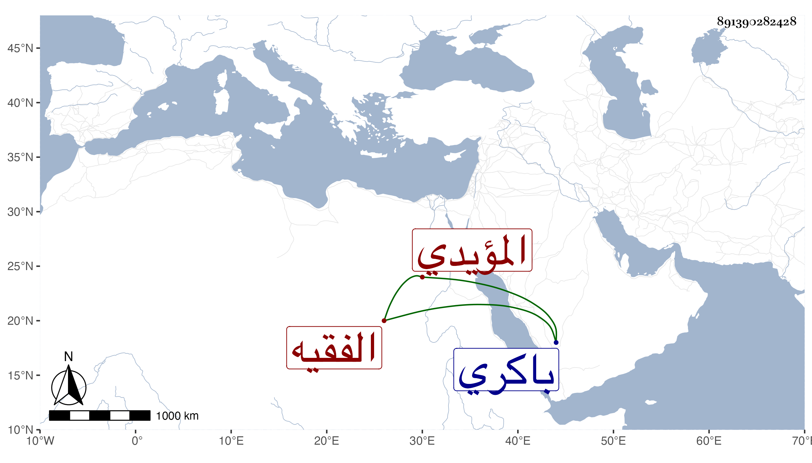

0902Sakhawi.DawLamic.ITO20230111-ara1.EIS1600.891390282428
Biography ID: 891390282428
184
تنم الابو بكري المؤيدي ويقال له الفقيه ويلقب صلاح الدين . كان أحد رءوس النوب وأمير عشرة ، مات شهيدا بالاسهال وهو راجع من الحج ببير القروي ودفن باكري في المحرم سنة اثنتين وثمانين وقد قارب الثمانين وكان خيرا صاهر المحب الاقصرائي على ابنته وماتت تحته ، وسافر في الغزوات والتجاريد غير مرة وهو صاحب البيت المجاور لمسجد الأميني الاقصرائي بالقرب من الايتمشية الذي صار لشقيقه تاني بك الاياسي الماضي .
